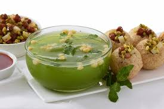

Panipuri

Description
This popular street food doesn’t need any introduction! Potato, onion, chickpeas, coriander chutney stuffed crispy puri drenched in sour and spicy mint flavored water (pudina pani) easily fills one’s mouth and takes taste buds on a journey of heaven and it is no wonder that it’s a popular street snack along the length and breadth of India and known as gol gappa, puchka, pakodi, Pani Puri, etc. Preparing pudina vala pani and masala for panipuri at home is not only a healthier way of enjoying it but also allows you to customize it the way you like it. It is very simple to assemble and one can easily find puffed puri at any Indian grocery store or prepare at home with this recipe.
Ingredients
For Puri
- 1 cup rava / suji / semolina
- 2 tbsp maida
- 3 tbsp oil
- ¼ cup hot water
- oil
For Pani
- ¼ cup mint / pudina
- ½ cup coriander
- 1 inch ginger
- 2 chilli
- small ball sized tamarind
- 1 tsp chaat masala
- 1 tsp cumin powder
- pinch hing / asafoetida
- ¾ tsp salt
- 4 cup cold water
For Potato Stuffing
- 3 potato / aloo, boiled & mashed
- ½ onion, finely chopped
- 2 tbsp coriander, finely chopepd
- ½ tsp cumin powder
- ½ tsp chaat masala
- ¼ tsp pepper powder
- ½ tsp kashmiri red chilli powder
- ½ tsp salt
Steps
For Puri
- firstly, in a large bowl take 1 cup rava and 2 tbsp maida.
- add 3 tbsp oil, crumble and mix well making sure the rava turns moist.
- now add ¼ cup hot water and start to knead.
- knead for 5 to 8 minutes or until the dough is formed.
- sprinkle water as required and knead to a smooth and soft dough.
- cover the dough and rest for 20 minutes.
- after 20 minutes, continue to knead for 2 more minutes.
- now pinch a very small ball sized dough.
- roll and flatten into small disk making sure it is thin.
- deep fry in hot oil, do not overcrowd the oil.
- flip over once the puri puffs up.
- fry on medium flame until it turns golden brown and crisp from both the sides.
- drain off over kitchen paper to get rid off excess oil.
- puri is ready for pani puri. once cooled completely, you can store in an airtight container and use it for a week.
For Pani
- firstly, in a small blender take ¼ cup mint, ½ cup coriander, 1 inch ginger, 2 chilli and small ball sized tamarind.
- blend to smooth paste adding water as required.
- transfer theeka pani puri paste into a large bowl.
- add 1 tsp chaat masala, 1 tsp cumin powder, pinch hing, ¾ tsp salt and 4 cup cold water.
- mix well and theeka pani is ready to enjoy with golgappa.
For Potato Stuffing
- firstly, in a small bowl take 3 potato, ½ onion and 2 tbsp coriander.
- also add ½ tsp cumin powder, ½ tsp chaat masala, ¼ tsp pepper powder, ½ tsp chilli powder and ½ tsp salt.
- mix well making sure everything is well combined.
- aloo stuffing is ready to enjoy with puchka.
Assembling pani puri for serving
- make a small hole in centre of puri.
- stuff a tsp of prepared aloo stuffing into puri.
- dip into pani and enjoy.